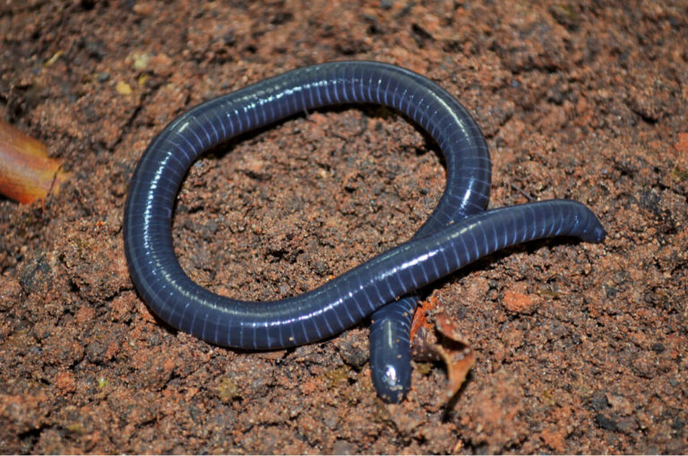

La cecilia es un anfibio sin patas, parecido a una lombriz o serpiente. Pertenece al orden Gymnophiona y vive bajo la tierra o en lugares muy húmedos.

No tiene patas. Su cuerpo es largo y cilíndrico. Tiene ojos muy pequeños. Vive bajo tierra o en el lodo. Su piel es húmeda y resbalosa. Respira por pulmones y por la piel.
Vive en zonas tropicales de América, África y Asia. Se alimenta de insectos y lombrices. No es venenosa para los humanos. Es difícil de ver porque casi siempre está enterrada. Es uno de los anfibios menos conocidos.